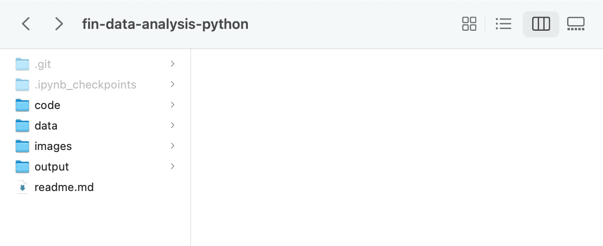
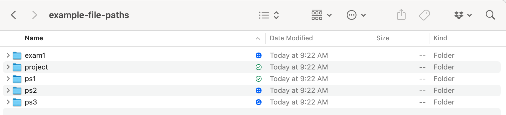

Code style, PEP8, and linting#
As we learn to write code, we want to strive for readable code. This means code that is both easy for someone else to read and code that is easy for a future you to read!
I don’t want to overwhelm you with rules right now, but we should be aware of how to format our Python code for readability and consistency. Python programmers like to follow a certain style, called PEP8.
PEP8 lays out conventions for indentation, spacing, commenting, naming, line length, etc. Some basics rules to know for now:
Use 4 spaces per indentation level.
Limit your code line length to 79 characters. You can indent onto the next line.
Package imports should be at the top and on separate lines.
Pay attention to how you are naming your variables, functions, etc. Pick a style and be consistent.
Here are some other style guides for you. Just keep them handy.
https://realpython.com/python-pep8/
https://www.datacamp.com/tutorial/pep8-tutorial-python-code
https://google.github.io/styleguide/pyguide.html
For the Google Style Guide, check out Section 3 first.
All of this will make sense as we start to code. But, I think it is helpful to be aware that there are conventions before we start. However, don’t get too hung up on them at first. They will start to feel natural as we look at examples and write our own.
Here’s an example of a style guide from the DataCamp tutorial.

Fig. 25 Indentation is important in Python. Improper indentation will lead to syntax errors and your code won’t run.#
# This prints Hello World!
print("Hello World!")
Hello World!
Notice the one space after the # in the comment. This is part of commenting style in Python.
Good vs. Bad Style: Examples#
Let’s look at some concrete examples. These will make more sense as you learn Python, but bookmark this section and come back to it.
Variable Naming#
Variable names should be descriptive and use snake_case (lowercase with underscores).
# Bad - what do these mean?
x = 0.05
y = 100000
z = x * y
# Good - self-documenting code
interest_rate = 0.05
principal = 100000
annual_interest = interest_rate * principal
The good version reads almost like English. Six months from now, you’ll thank yourself for using descriptive names.
Tip
A good rule of thumb: if you need a comment to explain what a variable is, the variable name probably isn’t descriptive enough.
Spacing and Operators#
Put spaces around operators and after commas. It makes code much easier to scan.
# Bad - cramped and hard to read
portfolio_return=weights[0]*returns[0]+weights[1]*returns[1]+weights[2]*returns[2]
# Good - breathing room
portfolio_return = weights[0] * returns[0] + weights[1] * returns[1] + weights[2] * returns[2]
# Even better - break long lines
portfolio_return = (weights[0] * returns[0]
+ weights[1] * returns[1]
+ weights[2] * returns[2])
---------------------------------------------------------------------------
NameError Traceback (most recent call last)
Cell In[3], line 2
1 # Bad - cramped and hard to read
----> 2 portfolio_return=weights[0]*returns[0]+weights[1]*returns[1]+weights[2]*returns[2]
4 # Good - breathing room
5 portfolio_return = weights[0] * returns[0] + weights[1] * returns[1] + weights[2] * returns[2]
NameError: name 'weights' is not defined
Import Statements#
Imports go at the top of your file, with standard library imports first, then third-party packages, then your own modules. Each import on its own line.
# Bad - messy imports scattered throughout
import pandas as pd, numpy as np
import matplotlib.pyplot as plt
from datetime import datetime
import yfinance as yf
# Good - organized and on separate lines
import datetime
import matplotlib.pyplot as plt
import numpy as np
import pandas as pd
import yfinance as yf
Function Definitions#
Functions should have descriptive names (verbs are good), and ideally a docstring explaining what they do.
# Bad - what does this do? What are a and b?
def calc(a, b):
return (a - b) / b
# Good - clear name and docstring
def calculate_return(current_price, previous_price):
"""
Calculate the simple return between two prices.
Parameters:
-----------
current_price : float
The current price
previous_price : float
The previous price
Returns:
--------
float
The simple return as a decimal
"""
return (current_price - previous_price) / previous_price
The docstring (the text in triple quotes) explains what the function does. This is especially important in finance where formulas can be ambiguous. Is that return simple or log? Annualized or not? The docstring tells you.
Type Hints (Optional but Increasingly Common)#
Modern Python supports type hints — annotations that tell readers (and tools) what types of data your functions expect and return. You don’t need to use them in this class, but you’ll see them in professional code and AI-generated code.
Note
Type hints are optional in Python — your code will run the same with or without them. But they make code easier to understand and help catch bugs before you run the code.
# Without type hints
def calculate_sharpe(returns, risk_free_rate):
excess_returns = returns - risk_free_rate
return excess_returns.mean() / excess_returns.std()
# With type hints
import pandas as pd
def calculate_sharpe_typed(returns: pd.Series, risk_free_rate: float = 0.0) -> float:
"""Calculate the Sharpe ratio for a returns series."""
excess_returns = returns - risk_free_rate
return excess_returns.mean() / excess_returns.std()
The type hints tell you:
returns: pd.Series— the first argument should be a pandas Seriesrisk_free_rate: float = 0.0— the second argument should be a float, defaulting to 0.0-> float— the function returns a float
When you use AI tools like Copilot or Claude, they often generate code with type hints. Now you know what they mean!
Files, file paths, and the names of things#
We’re using Github classroom for assignments, so we are worried about repo locations. But, there can be multiple files and folders in a repo and then again on our computers.
My layout is simple. A folder for this class. Then, inside that folder, I have the following sub-folders: data, output, images, and code.

Fig. 26 My class folder, fin-data-analysis-python and sub-folders. You won’t have the readme.md file. That is generating the Read Me text on Github. You also probably don’t have hidden files and folders visible on your machine.#
When I open up Jupyter or VS Code, I open up that class folder. Then, I can see my folder structure. I then use relative file paths to open and save files.
And, instead of a single code folder, you can set-up a folder for each assignment. Then, inside each of these folders are folders called code, data, etc.

Fig. 27 Each assignment can get its own folder and sub-folder structure.#
And, this is a great presentation on how to name files. You want your file names to be machine readable, human readable, easily searchable, and easily sorted. There’s something of a science to doing this correctly.
Getting this stuff right will make your life easier.
Linting and Formatting Tools#
Linting refers to automatically checking your code for style issues and potential bugs — things like undefined variables, unused imports, or inconsistent formatting. A linter is a tool that does this checking for you.
Why Use a Linter?#
Linters catch mistakes before you run your code:
Typos in variable names
Missing imports
Unused variables (often a sign of a bug)
Style inconsistencies
Think of it like spell-check for code.
Linting in VS Code and Codespaces#
VS Code has built-in linting support. When you install the Python extension (which you need anyway), you get basic linting automatically.
For more powerful linting, you can install Pylint or Ruff:
Open the Extensions panel in VS Code (left sidebar)
Search for “Pylint” or “Ruff” and install
You’ll start seeing squiggly underlines for potential issues
Ruff is the newer, faster option and is increasingly popular. It combines linting and formatting in one tool.
Auto-Formatting#
Even better than checking style manually: let a tool fix it for you. Auto-formatters reformat your code to follow style guidelines automatically.
Popular formatters:
Black — “The uncompromising code formatter.” Very opinionated, but removes all style debates.
Ruff — Can also format code, not just lint it.
In VS Code, you can set up “Format on Save” so your code is automatically cleaned up every time you save. This is a huge time-saver.
Tip
Don’t worry about memorizing all the style rules. Use a linter to catch issues and a formatter to fix them automatically. Your job is to write code that works; let the tools handle the formatting.
Quick Reference: Common Style Rules#
Rule |
Example |
|---|---|
Use |
|
Use |
|
Use |
|
Spaces around operators |
|
Space after commas |
|
Imports at the top |
Always |
One import per line |
|
Maximum line length |
79-100 characters |
Two blank lines before functions |
Helps readability |
Comments: When and How#
Comments explain the why, not the what. Good code is self-documenting for what it does; comments explain why you’re doing it.